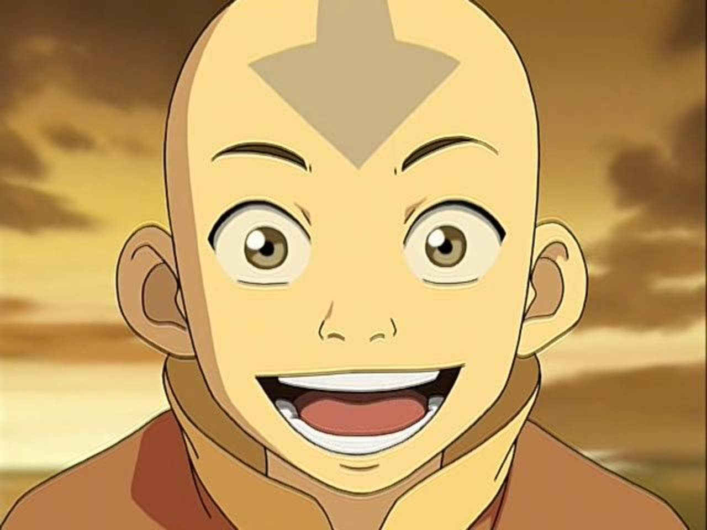
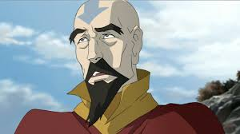

| 1 |

|
Aang |
El Avatar Aang era un Nómada Aire nacido en el 12 del AG y el Avatar durante el conflicto de un siglo de duración conocido como la Guerra de los Cien Años. Su predecesor inmediato era el Avatar Roku, y su sucesor inmediato es el Avatar
Korra. Durante su vida, Aang, como todos los Avatares, era la única persona capaz de utilizar las cuatro disciplinas de Control: Aire Control, Agua Control, Tierra Control, y Fuego Control. También fue uno de un grupo selecto de
Avatares, y uno de los primeros en muchos ciclos en aprender el arte antiguo de la Energía Control. Aang fue el primer Avatar visto utilizando esta técnica, y le pasó su conocimiento sobre esta antigua técnica al Avatar Korra.
Poco antes del inicio de la Guerra de los Cien Años, Aang fue congelado en un iceberg durante cien años. Salió, todavía biológicamente teniendo doce años, en un mundo sumido en la guerra. Durante su ausencia, la Nación del Fuego
había hecho la guerra a las demás naciones y logró destruir completamente a los pacifistas Nómadas Aire. Le correspondió a Aang, el Avatar y el último Maestro Aire, poner fin a la guerra al dominar los otros tres elementos y derrotar
al Señor del Fuego, Ozai. Cuando emergió de su encierro, Aang aún era un niño inmaduro y amable en el fondo a lo largo de este año de lucha, a pesar de la abrumadora pérdida de su pueblo y la pesada carga que había sido obligado
a soportar. Después de su victoria sobre el Rey Fénix, Aang comenzó una relación romántica con su amiga cercana, Katara. La pareja se casó y formó una familia, que incluye tres hijos: Kya (una Maestra Agua), Bumi (un no maestro,
que después de la Convergencia Armónica se convertiría en un Maestro Aire), y el más joven, Tenzin (un Maestro Aire).
|
| 2 |

|
Tenzin |
Tenzin es el hijo menor del Avatar Aang y Katara y uno de los pocos Maestros del Aire Control vivientes. Está casado con Pema y tiene cuatro hijos con ella: Jinora, Ikki, Meelo, y Rohan. Él representaba a los Nómadas Aire en el Consejo
de la República Unida de Ciudad República, pero vive en el Templo Aire de la Isla con su familia. Un hombre tranquilo y serio, él tiene la responsabilidad de proteger al Avatar Korra, Ciudad República, su familia, y el Templo Aire
de la Isla.
|